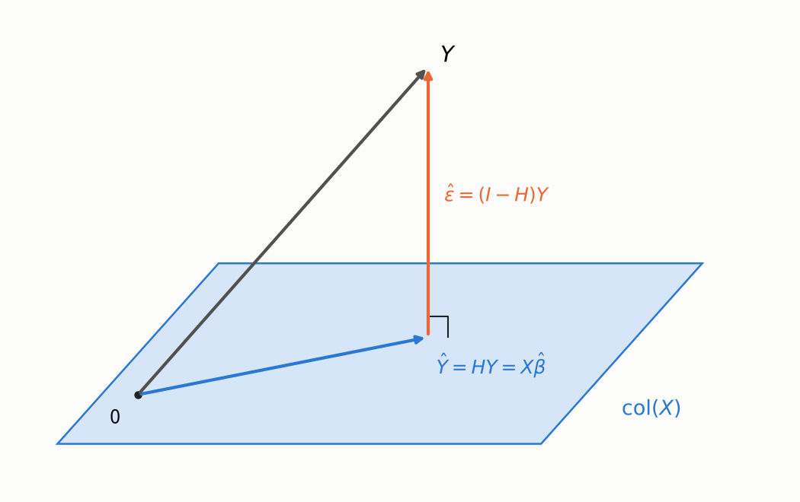
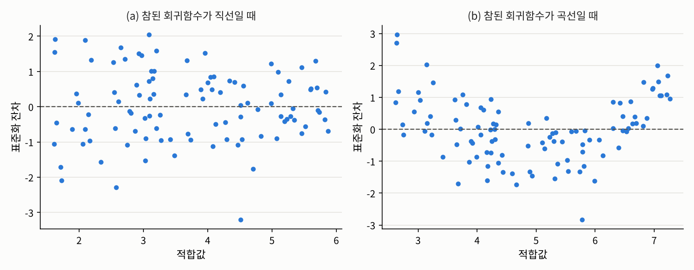

3.3 사영으로 보는 회귀: 햇 행렬과 잔차
3장 선형 회귀와 분산분석 · 최소제곱법의 기하학
들어가며
3.2절에서는 최소제곱 추정량 \(\hat{\beta} = (X^\top X)^{-1}X^\top Y\)를 미분으로 구하고 그 성질을 따졌습니다. 이번 글에서는 같은 결과를 3장 소개 글에서 예고한 기하학의 눈으로 다시 봅니다. 관측값 \(n\)개를 모은 \(Y\)를 \(\mathbb{R}^n\)의 한 점으로 보면, 최소제곱법은 그 점에서 어떤 평면까지 가장 가까운 점을 찾는 문제가 됩니다.
이 관점에서 세 가지 질문에 답하겠습니다. 적합값과 잔차는 기하학적으로 무엇인지, 오차의 분산 \(\sigma^2\)는 어떻게 추정하며 왜 \(n - d\)로 나누는지, 그리고 잔차를 이용해 모형이 맞는지 어떻게 점검하는지입니다.
문제 1: 적합값은 기하학적으로 무엇인가
문제 상황
최소제곱 추정량으로 계산한 \(\hat{Y} := X\hat{\beta}\)를 적합값(fitted value)이라고 합니다. 적합값은 \(\mathbb{R}^n\)의 벡터인데, 이 벡터는 관측값 \(Y\)와 어떤 관계에 있을까요?
접근 아이디어
계획행렬 \(X\)의 열들을 \(X_{\cdot 1}, \ldots, X_{\cdot d}\)라 하면, 어떤 \(\beta\)에 대해서든 \(X\beta = \beta_1 X_{\cdot 1} + \cdots + \beta_d X_{\cdot d}\)는 열들의 일차결합입니다. 따라서 \(\beta\)를 바꿔 가며 만들 수 있는 모든 “평균 벡터”의 모임은 \(X\)의 열공간
\[\mathrm{col}(X) := \{X\beta : \beta \in \mathbb{R}^d\} \subset \mathbb{R}^n\]
이고, \(\mathrm{rank}(X) = d\)이면 이는 \(d\)차원 부분공간입니다. 최소제곱법은 \(\lVert Y - X\beta \rVert\)를 최소화하므로, 열공간 위의 점들 가운데 \(Y\)에 가장 가까운 점을 찾는 것입니다. 3차원 공간의 점에서 바닥 평면까지 가장 가까운 점은 점에서 바닥으로 수직으로 내린 발이듯이, 그 점은 \(Y\)를 열공간에 직교사영한 점일 것입니다.

필요한 개념들
\(Y\)에 곱하면 “모자를 씌운” \(\hat{Y}\)가 나온다고 해서 햇 행렬이라는 이름이 붙었습니다. 햇 행렬은 접근 아이디어에서 짐작한 직교사영 그 자체입니다.
성질 4는 사실 3.2절의 정규방정식 \(X^\top(Y - X\hat{\beta}) = 0\)을 다시 쓴 것입니다. 정규방정식이 말하는 것은 결국 “잔차는 열공간에 수직이다”라는 기하학적 사실이었습니다. 또 이 사실 하나로 3.2절의 정리 3.2.2를 미분 없이 다시 증명할 수도 있습니다. 임의의 \(\beta\)에 대해 \(Y - X\beta = \hat{\varepsilon} + X(\hat{\beta} - \beta)\)이고 두 항이 직교하므로, 피타고라스 정리에 의해
\[\lVert Y - X\beta \rVert^2 = \lVert \hat{\varepsilon} \rVert^2 + \lVert X(\hat{\beta} - \beta) \rVert^2 \ge \lVert \hat{\varepsilon} \rVert^2\]
이고, 등호는 \(X(\hat{\beta} - \beta) = 0\), 즉 \(\beta = \hat{\beta}\)일 때만 성립합니다.
해결
3.2절 문제 1의 데이터로 정리 3.3.2를 확인해 보겠습니다.
import numpy as np
np.random.seed(1557)
n = 50
x1 = np.random.uniform(0, 10, size=n)
x2 = np.random.normal(5, 2, size=n)
X = np.column_stack([np.ones(n), x1, x2]) # 3.2절과 같은 계획행렬
beta = np.array([1.0, 2.0, -0.5])
y = X @ beta + 3 * np.random.normal(size=n)
H = X @ np.linalg.solve(X.T @ X, X.T) # 햇 행렬 X (X^T X)^{-1} X^T
res = y - H @ y # 잔차
print("H가 대칭인가:", np.allclose(H, H.T), " H^2 = H인가:", np.allclose(H @ H, H), " tr(H) =", round(np.trace(H), 10))
print(f"|잔차의 합| = {abs(res.sum()):.1e}, X^T(잔차)의 성분 중 절댓값의 최대 = {np.max(np.abs(X.T @ res)):.1e}")H가 대칭인가: True H^2 = H인가: True tr(H) = 3.0
|잔차의 합| = 2.3e-13, X^T(잔차)의 성분 중 절댓값의 최대 = 9.2e-13잔차의 합과 \(X^\top\hat{\varepsilon}\)은 컴퓨터의 반올림 오차 수준에서 \(0\)입니다. 잔차의 합이 \(0\)인 것은 절편 열 \(\mathbf{1}_n\)이 \(X\)에 들어 있어서 \(\mathbf{1}_n^\top\hat{\varepsilon} = 0\)이기 때문입니다.
문제 2: 오차의 분산은 어떻게 추정하는가
문제 상황
3.2절의 정리 3.2.5에서 최소제곱 추정량의 공분산은 \(\sigma^2(X^\top X)^{-1}\)이었습니다. 실제로 이 값을 계산하려면 모르는 오차의 분산 \(\sigma^2\)를 추정해야 합니다. 오차 \(\varepsilon\)은 관측할 수 없지만 잔차 \(\hat{\varepsilon}\)은 계산할 수 있으니, 잔차의 제곱 평균을 쓰면 될까요? 3.2절에서 본 최대우도 추정량 \(\lVert \hat{\varepsilon} \rVert^2/n\)은 치우쳐 있다고 했는데, 무엇으로 나눠야 할까요?
필요한 개념들
잔차는 오차와 비슷해 보이지만 같지 않습니다. 그 차이를 정확히 계산해 보겠습니다. 잔차제곱합을 \(\mathrm{RSS} := \sum_{i=1}^n \hat{\varepsilon}_i^2 = \lVert \hat{\varepsilon} \rVert^2\)으로 씁니다.
성질 4로부터 오차 분산의 불편추정량을 바로 얻습니다.
\[\hat{\sigma}^2 := \frac{\mathrm{RSS}}{n - d}, \qquad \mathbb{E}[\hat{\sigma}^2] = \sigma^2\]
왜 \(n\)이 아니라 \(n - d\)일까요? 기하학적으로 보면 답이 분명합니다. 오차 \(\varepsilon\)은 \(\mathbb{R}^n\)의 \(n\)개 방향으로 모두 흩어질 수 있지만, 잔차 \(\hat{\varepsilon} = (I_n - H)\varepsilon\)은 열공간의 직교여공간, 즉 \((n - d)\)차원 부분공간에 갇혀 있습니다. 오차 가운데 열공간 방향의 \(d\)개 성분은 적합값 \(\hat{Y}\)가 “흡수”해 버려서 잔차에 남지 않습니다. 그래서 잔차의 제곱합은 오차의 제곱합보다 평균적으로 작고, 남은 방향의 개수 \(n - d\)로 나눠야 공정한 평균이 됩니다. 이 \(n - d\)를 잔차의 자유도(degrees of freedom)라고 합니다. 1.1절에서 표본분산을 \(n - 1\)로 나누던 것은 절편 하나뿐인 모형(\(d = 1\))의 특수한 경우입니다.
해결
같은 계획행렬에서 오차만 새로 뽑아 2만 번 반복해 보겠습니다. 참된 분산은 \(\sigma^2 = 9\)이고, \(n = 50\), \(d = 3\)입니다.
reps = 20_000
E = 3 * np.random.normal(size=(reps, n)) # 오차만 새로 뽑음
R = E - E @ H # 잔차 = (I - H) 오차 (H는 대칭)
rss = np.sum(R**2, axis=1)
print(f"RSS의 평균 = {rss.mean():.2f}, 이론값 sigma^2 (n - d) = {9 * (n - 3)}")
print(f"RSS/(n-d)의 평균 = {np.mean(rss / (n - 3)):.4f}, RSS/n의 평균 = {np.mean(rss / n):.4f}, sigma^2 = 9")RSS의 평균 = 422.74, 이론값 sigma^2 (n - d) = 423
RSS/(n-d)의 평균 = 8.9946, RSS/n의 평균 = 8.4549, sigma^2 = 9\(n - d\)로 나눈 추정량은 평균적으로 참값 \(9\)를 맞히고, \(n\)으로 나눈 최대우도 추정량은 평균적으로 \(9 \times 47/50 = 8.46\)으로 작게 나옵니다.
문제 3: 잔차로 모형을 점검하기
문제 상황
3.1절에서 회귀 분석의 가정은 회귀함수의 모양에 들어간다고 했습니다. 그렇다면 선형 회귀 모형이라는 가정이 맞는지는 어떻게 확인할 수 있을까요? 자연스러운 생각은 오차를 들여다보는 것입니다. 모형이 맞다면 오차에는 아무 패턴이 없어야 하니까요. 그런데 우리가 볼 수 있는 것은 오차가 아니라 잔차입니다.
필요한 개념들
정리 3.3.3의 2에서 \(\mathrm{Var}(\hat{\varepsilon}_i) = \sigma^2(1 - H_{ii})\)입니다. 즉 오차들은 분산이 모두 \(\sigma^2\)로 같고 서로 상관이 없지만, 잔차들은 분산이 서로 다르고 서로 상관되어 있습니다. 잔차를 오차처럼 읽으려면 이 차이를 보정해야 합니다.
\(\hat{Y}_i = \sum_j H_{ij}Y_j\)이므로 \(H_{ii}\)는 \(i\)번째 관측값 \(Y_i\)가 자기 자신의 적합값에 얼마나 큰 비중으로 들어가는지를 나타냅니다. 레버리지가 크면 그 관측값은 회귀 직선을 자기 쪽으로 강하게 끌어당깁니다.
레버리지의 합이 \(d\)로 고정되어 있으므로 평균 레버리지는 \(d/n\)입니다. 그보다 훨씬 큰 레버리지를 가진 관측값은 특별히 주의해서 봐야 합니다. 지시변수의 경우는 극단적인 예입니다. 어떤 관측값 하나만을 위한 열이 있으면, 그 열의 계수가 그 관측값을 완벽하게 맞추는 데 쓰여서 잔차가 \(0\)이 되고, 그 관측값은 나머지 계수의 추정에 아무 정보도 주지 않습니다.
이제 표준화 잔차의 의미를 정리할 수 있습니다. 오차가 정규분포 \(N_n(0, \sigma^2 I_n)\)을 따르고 모형이 맞다면, \(\hat{\varepsilon}_i/\sqrt{1 - H_{ii}}\)는 정확히 \(N(0, \sigma^2)\)을 따르므로 \(e_i\)는 근사적으로 표준정규분포를 따릅니다. 따라서 표준화 잔차를 그려 보면 모형을 점검할 수 있습니다.
- 적합값에 대해 그린 잔차 그림(residual plot)에 곡선 모양 같은 패턴이 보이면, 회귀함수의 모양이 틀렸다는 신호입니다.
- 적합값이 커질수록 잔차가 넓게 퍼지는 깔때기 모양이 보이면, 오차의 분산이 같다는 가정이 틀렸다는 신호입니다.
- 표준화 잔차의 분위수를 정규분포의 분위수와 비교하는 Q-Q 그림(Q-Q plot)이 직선에서 크게 벗어나면, 정규 오차 가정을 의심해야 합니다.
해결
먼저 레버리지를 확인해 보겠습니다. 설명변수가 \(1, 2, \ldots, 20\)인 관측값 20개에, 멀리 떨어진 \(x = 60\)인 관측값 하나를 더합니다.
np.random.seed(1557)
x = np.append(np.arange(1, 21, dtype=float), 60) # 1~20과 멀리 떨어진 x = 60
X = np.column_stack([np.ones(21), x])
H = X @ np.linalg.solve(X.T @ X, X.T)
lev = np.diag(H)
print("레버리지: x = 1 ->", round(lev[0], 4), ", x = 10 ->", round(lev[9], 4), ", x = 60 ->", round(lev[20], 4))
print("레버리지의 합 =", round(lev.sum(), 10))
y = 2 + 0.5 * x + 2 * np.random.normal(size=21)
for shift in [0, -20]:
y2 = y.copy(); y2[20] += shift # x = 60인 점의 y만 옮김
b = np.linalg.solve(X.T @ X, X.T @ y2)
print(f"x = 60인 점의 y를 {shift:+d}만큼 옮겼을 때: 기울기 = {b[1]:.4f}")
e21 = np.zeros(21); e21[20] = 1 # 21번째 관측값에만 1인 지시변수 열
X3 = np.column_stack([X, e21])
H3 = X3 @ np.linalg.solve(X3.T @ X3, X3.T)
print("지시변수 열을 더한 뒤 21번째 레버리지 =", round(H3[20, 20], 10), ", 21번째 잔차 =", round(abs(y[20] - H3[20] @ y), 10))레버리지: x = 1 -> 0.0945 , x = 10 -> 0.0503 , x = 60 -> 0.7888
레버리지의 합 = 2.0
x = 60인 점의 y를 +0만큼 옮겼을 때: 기울기 = 0.5457
x = 60인 점의 y를 -20만큼 옮겼을 때: 기울기 = 0.2312
지시변수 열을 더한 뒤 21번째 레버리지 = 1.0 , 21번째 잔차 = 0.0평균 레버리지는 \(d/n = 2/21 \approx 0.095\)인데, 멀리 떨어진 관측값의 레버리지는 \(0.79\)나 됩니다. 이 점 하나의 \(y\)값만 바꿔도 기울기가 \(0.55\)에서 \(0.23\)으로 절반 이하로 떨어집니다. 21개 관측값 가운데 하나가 회귀 직선을 사실상 좌우하는 셈입니다. 2.1절에서 이상치 하나가 상관계수를 바꿔 놓았던 것과 같은 현상을, 레버리지가 정확한 숫자로 보여 줍니다. 마지막 줄은 정리 3.3.5의 지시변수 경우를 확인한 것입니다.
다음은 잔차 그림입니다. 아래 그림은 같은 설명변수에서 두 가지 반응변수를 만들어 직선을 적합한 뒤, 표준화 잔차를 적합값에 대해 그린 것입니다. (a)는 참된 회귀함수가 직선인 경우이고, (b)는 참된 회귀함수에 이차항 \(0.15(x - 5)^2\)가 섞인 경우입니다.

(a)에서는 잔차가 \(0\)을 중심으로 아무 패턴 없이 흩어져 있습니다. (b)에서는 양 끝에서 잔차가 양수, 가운데에서 음수인 U자 모양이 뚜렷합니다. 직선이 곡선을 따라가지 못해서 생긴 체계적인 오차입니다. 3.1절에서 “모형이 틀려도 최소제곱법은 아무 문제 없이 직선을 내놓는다”고 했는데, 그 틀림을 드러내는 도구가 바로 잔차 그림입니다. 이런 패턴이 보이면 \(x^2\) 같은 항을 설명변수에 추가하는 것을 고려할 수 있습니다.
정리: 그림자로 보는 최소제곱법
이번 글의 내용을 기하학의 언어로 정리하면 다음과 같습니다.
| 대수 | 기하 |
|---|---|
| 적합값 \(\hat{Y} = HY\) | \(Y\)의 열공간으로의 그림자 |
| 정규방정식 \(X^\top\hat{\varepsilon} = 0\) | 잔차는 열공간에 수직 |
| \(\mathrm{tr}(H) = d\) | 열공간의 차원 |
| \(\hat{\sigma}^2 = \mathrm{RSS}/(n - d)\) | 잔차가 갇힌 공간의 차원 \(n - d\)로 나눔 |
| 레버리지 \(H_{ii}\) | \(i\)번째 관측값이 자기 그림자를 끌어당기는 힘 |
이 그림에는 아직 쓰지 않은 피타고라스 정리가 하나 더 숨어 있습니다. \(Y\)에서 평균을 뺀 벡터를 “설명된 부분”과 “남은 부분”으로 직교분해하면, 길이의 제곱이 그대로 나뉩니다. 3.4절에서는 이 분해로 결정계수 \(R^2\)를 정의하고, 그 의미와 한계를 살펴봅니다.
연결되는 개념
- \(\leftarrow\) 이전 개념: 3.2 최소제곱 추정량과 가우스-마르코프 정리
- \(\rightarrow\) 다음 개념: 3.4 결정계수와 모형의 설명력